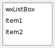
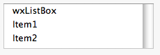

| Version: 2.9.4 |
#include </home/zeitlin/src/wx/github/interface/wx/listbox.h>
 Inheritance diagram for wxListBox:
Inheritance diagram for wxListBox:A listbox is used to select one or more of a list of strings.
The strings are displayed in a scrolling box, with the selected string(s) marked in reverse video. A listbox can be single selection (if an item is selected, the previous selection is removed) or multiple selection (clicking an item toggles the item on or off independently of other selections).
List box elements are numbered from zero. Their number may be limited under some platforms.
A listbox callback gets an event wxEVT_COMMAND_LISTBOX_SELECTED for single clicks, and wxEVT_COMMAND_LISTBOX_DOUBLECLICKED for double clicks.
This class supports the following styles:
SHIFT or CTRL keys together with the cursor movement keys or the mouse. Note that wxLB_SINGLE, wxLB_MULTIPLE and wxLB_EXTENDED styles are mutually exclusive and you can specify at most one of them (single selection is the default). See also Window Styles.
The following event handler macros redirect the events to member function handlers 'func' with prototypes like:
Event macros for events emitted by this class:
wxEVT_COMMAND_LISTBOX_SELECTED event, when an item on the list is selected or the selection changes. wxEVT_COMMAND_LISTBOX_DOUBLECLICKED event, when the listbox is double-clicked.  |  |  |
| wxMSW appearance | wxGTK appearance | wxMac appearance |
Public Member Functions | |
| wxListBox () | |
| Default constructor. | |
| wxListBox (wxWindow *parent, wxWindowID id, const wxPoint &pos=wxDefaultPosition, const wxSize &size=wxDefaultSize, int n=0, const wxString choices[]=NULL, long style=0, const wxValidator &validator=wxDefaultValidator, const wxString &name=wxListBoxNameStr) | |
| Constructor, creating and showing a list box. | |
| wxListBox (wxWindow *parent, wxWindowID id, const wxPoint &pos, const wxSize &size, const wxArrayString &choices, long style=0, const wxValidator &validator=wxDefaultValidator, const wxString &name=wxListBoxNameStr) | |
| Constructor, creating and showing a list box. | |
| virtual | ~wxListBox () |
| Destructor, destroying the list box. | |
| void | Deselect (int n) |
| Deselects an item in the list box. | |
| virtual void | SetSelection (int n) |
Sets the selection to the given item n or removes the selection entirely if n == wxNOT_FOUND. | |
| virtual int | GetSelection () const |
Returns the index of the selected item or wxNOT_FOUND if no item is selected. | |
| virtual bool | SetStringSelection (const wxString &s, bool select) |
| virtual bool | SetStringSelection (const wxString &s) |
| Selects the item with the specified string in the control. | |
| virtual int | GetSelections (wxArrayInt &selections) const |
| Fill an array of ints with the positions of the currently selected items. | |
| int | HitTest (const wxPoint &point) const |
Returns the item located at point, or wxNOT_FOUND if there is no item located at point. | |
| int | HitTest (int x, int y) const |
| This is an overloaded member function, provided for convenience. It differs from the above function only in what argument(s) it accepts. | |
| void | InsertItems (unsigned int nItems, const wxString *items, unsigned int pos) |
| Insert the given number of strings before the specified position. | |
| void | InsertItems (const wxArrayString &items, unsigned int pos) |
| Insert the given number of strings before the specified position. | |
| virtual bool | IsSelected (int n) const |
| Determines whether an item is selected. | |
| void | SetFirstItem (int n) |
| Set the specified item to be the first visible item. | |
| void | SetFirstItem (const wxString &string) |
| Set the specified item to be the first visible item. | |
| virtual void | EnsureVisible (int n) |
| Ensure that the item with the given index is currently shown. | |
| virtual bool | IsSorted () const |
| Return true if the listbox has wxLB_SORT style. | |
| virtual unsigned int | GetCount () const |
| Returns the number of items in the control. | |
| virtual wxString | GetString (unsigned int n) const |
| Returns the label of the item with the given index. | |
| virtual void | SetString (unsigned int n, const wxString &s) |
| Sets the label for the given item. | |
| virtual int | FindString (const wxString &s, bool bCase=false) const |
| Finds an item whose label matches the given string. | |
| bool | Create (wxWindow *parent, wxWindowID id, const wxPoint &pos=wxDefaultPosition, const wxSize &size=wxDefaultSize, int n=0, const wxString choices[]=NULL, long style=0, const wxValidator &validator=wxDefaultValidator, const wxString &name=wxListBoxNameStr) |
| Creates the listbox for two-step construction. | |
| bool | Create (wxWindow *parent, wxWindowID id, const wxPoint &pos, const wxSize &size, const wxArrayString &choices, long style=0, const wxValidator &validator=wxDefaultValidator, const wxString &name=wxListBoxNameStr) |
| Creates the listbox for two-step construction. | |
| wxListBox::wxListBox | ( | ) |
Default constructor.
| wxListBox::wxListBox | ( | wxWindow * | parent, |
| wxWindowID | id, | ||
| const wxPoint & | pos = wxDefaultPosition, |
||
| const wxSize & | size = wxDefaultSize, |
||
| int | n = 0, |
||
| const wxString | choices[] = NULL, |
||
| long | style = 0, |
||
| const wxValidator & | validator = wxDefaultValidator, |
||
| const wxString & | name = wxListBoxNameStr |
||
| ) |
Constructor, creating and showing a list box.
| parent | The parent window. |
| id | The ID of this control. A value of wxID_ANY indicates a default value. |
| pos | The initial position. If wxDefaultPosition is specified then a default position is chosen. |
| size | The initial size. If wxDefaultSize is specified then the window is sized appropriately. |
| n | Number of strings with which to initialise the control. |
| choices | The strings to use to initialize the control. |
| style | Window style. See wxListBox. |
| validator | The validator for this control. |
| name | The name of this class. |
wxPerl Note: Not supported by wxPerl.
| wxListBox::wxListBox | ( | wxWindow * | parent, |
| wxWindowID | id, | ||
| const wxPoint & | pos, | ||
| const wxSize & | size, | ||
| const wxArrayString & | choices, | ||
| long | style = 0, |
||
| const wxValidator & | validator = wxDefaultValidator, |
||
| const wxString & | name = wxListBoxNameStr |
||
| ) |
Constructor, creating and showing a list box.
See the other wxListBox() constructor; the only difference is that this overload takes a wxArrayString instead of a pointer to an array of wxString.
wxPerl Note: Use an array reference for the choices parameter.
| virtual wxListBox::~wxListBox | ( | ) | [virtual] |
Destructor, destroying the list box.
| bool wxListBox::Create | ( | wxWindow * | parent, |
| wxWindowID | id, | ||
| const wxPoint & | pos = wxDefaultPosition, |
||
| const wxSize & | size = wxDefaultSize, |
||
| int | n = 0, |
||
| const wxString | choices[] = NULL, |
||
| long | style = 0, |
||
| const wxValidator & | validator = wxDefaultValidator, |
||
| const wxString & | name = wxListBoxNameStr |
||
| ) |
Creates the listbox for two-step construction.
See wxListBox() for further details.
Reimplemented in wxCheckListBox.
| bool wxListBox::Create | ( | wxWindow * | parent, |
| wxWindowID | id, | ||
| const wxPoint & | pos, | ||
| const wxSize & | size, | ||
| const wxArrayString & | choices, | ||
| long | style = 0, |
||
| const wxValidator & | validator = wxDefaultValidator, |
||
| const wxString & | name = wxListBoxNameStr |
||
| ) |
Creates the listbox for two-step construction.
See wxListBox() for further details.
Reimplemented in wxCheckListBox.
| void wxListBox::Deselect | ( | int | n | ) |
Deselects an item in the list box.
| n | The zero-based item to deselect. |
| virtual void wxListBox::EnsureVisible | ( | int | n | ) | [virtual] |
Ensure that the item with the given index is currently shown.
Scroll the listbox if necessary.
This method is currently only implemented in wxGTK and wxOSX and does nothing in other ports.
| virtual int wxListBox::FindString | ( | const wxString & | string, |
| bool | caseSensitive = false |
||
| ) | const [virtual] |
Finds an item whose label matches the given string.
| string | String to find. |
| caseSensitive | Whether search is case sensitive (default is not). |
Reimplemented from wxItemContainerImmutable.
| virtual unsigned int wxListBox::GetCount | ( | ) | const [virtual] |
| virtual int wxListBox::GetSelection | ( | ) | const [virtual] |
Returns the index of the selected item or wxNOT_FOUND if no item is selected.
Implements wxItemContainerImmutable.
| virtual int wxListBox::GetSelections | ( | wxArrayInt & | selections | ) | const [virtual] |
Fill an array of ints with the positions of the currently selected items.
| selections | A reference to an wxArrayInt instance that is used to store the result of the query. |
wxPerl Note: In wxPerl this method takes no parameters and return the selected items as a list.
| virtual wxString wxListBox::GetString | ( | unsigned int | n | ) | const [virtual] |
Returns the label of the item with the given index.
| n | The zero-based index. |
Implements wxItemContainerImmutable.
| int wxListBox::HitTest | ( | const wxPoint & | point | ) | const |
Returns the item located at point, or wxNOT_FOUND if there is no item located at point.
It is currently implemented for wxMSW, wxMac and wxGTK2 ports.
| point | Point of item (in client coordinates) to obtain |
Reimplemented from wxWindow.
| int wxListBox::HitTest | ( | int | x, |
| int | y | ||
| ) | const |
This is an overloaded member function, provided for convenience. It differs from the above function only in what argument(s) it accepts.
Reimplemented from wxWindow.
| void wxListBox::InsertItems | ( | unsigned int | nItems, |
| const wxString * | items, | ||
| unsigned int | pos | ||
| ) |
Insert the given number of strings before the specified position.
| nItems | Number of items in the array items |
| items | Labels of items to be inserted |
| pos | Position before which to insert the items: if pos is 0 the items will be inserted in the beginning of the listbox |
wxPerl Note: Not supported by wxPerl.
| void wxListBox::InsertItems | ( | const wxArrayString & | items, |
| unsigned int | pos | ||
| ) |
Insert the given number of strings before the specified position.
| items | Labels of items to be inserted |
| pos | Position before which to insert the items: if pos is 0 the items will be inserted in the beginning of the listbox |
wxPerl Note: Use an array reference for the items parameter.
| virtual bool wxListBox::IsSelected | ( | int | n | ) | const [virtual] |
Determines whether an item is selected.
| n | The zero-based item index. |
| virtual bool wxListBox::IsSorted | ( | ) | const [virtual] |
Return true if the listbox has wxLB_SORT style.
This method is mostly meant for internal use only.
| void wxListBox::SetFirstItem | ( | const wxString & | string | ) |
Set the specified item to be the first visible item.
| string | The string that should be visible. |
| void wxListBox::SetFirstItem | ( | int | n | ) |
Set the specified item to be the first visible item.
| n | The zero-based item index that should be visible. |
| virtual void wxListBox::SetSelection | ( | int | n | ) | [virtual] |
Sets the selection to the given item n or removes the selection entirely if n == wxNOT_FOUND.
Note that this does not cause any command events to be emitted nor does it deselect any other items in the controls which support multiple selections.
| n | The string position to select, starting from zero. |
Implements wxItemContainerImmutable.
| virtual void wxListBox::SetString | ( | unsigned int | n, |
| const wxString & | string | ||
| ) | [virtual] |
Sets the label for the given item.
| n | The zero-based item index. |
| string | The label to set. |
Implements wxItemContainerImmutable.
| virtual bool wxListBox::SetStringSelection | ( | const wxString & | s, |
| bool | select | ||
| ) | [virtual] |
| virtual bool wxListBox::SetStringSelection | ( | const wxString & | string | ) | [virtual] |
Selects the item with the specified string in the control.
This method doesn't cause any command events to be emitted.
Notice that this method is case-insensitive, i.e. the string is compared with all the elements of the control case-insensitively and the first matching entry is selected, even if it doesn't have exactly the same case as this string and there is an exact match afterwards.
| string | The string to select. |
Reimplemented from wxItemContainerImmutable.